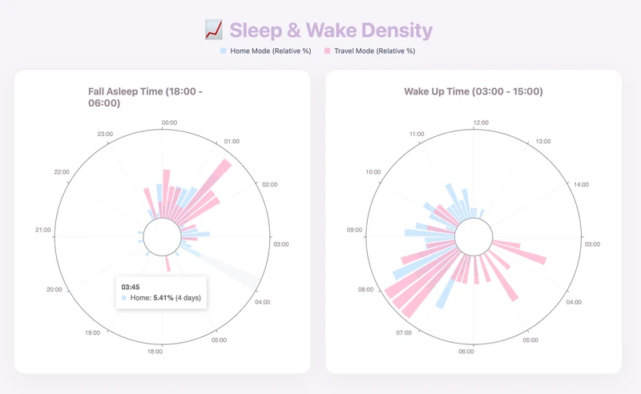
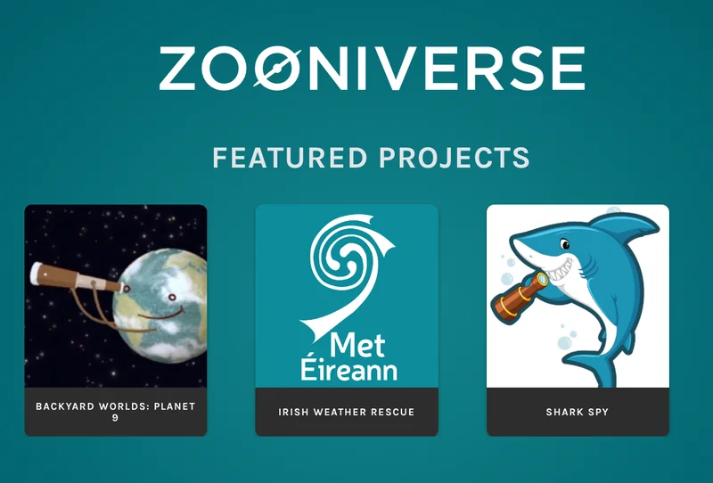

Sleep Data Visualization
Using personal device to record sleep data, find out the connection and relation in between.
View details →Posters, Python graphics, and digital humanities projects – combining visual storytelling with code.

Using personal device to record sleep data, find out the connection and relation in between.
View details →
A reflective essay examining micro-task crowdsourcing, structured data, and how predefined categories shape knowledge production in digital humanities projects.
Read essay →A critical essay linking AI supply chains, digital labour, and the politics of knowledge from Aaron Swartz to contemporary cloud infrastructures.
Read essay →A reflective essay on how open cultural data and AI-driven digitisation reshape power, preservation practices, and global access to memory institutions.
Read essay →
A film poster designed in GIMP plus a Python-Fu plug-in that auto-generates the same layout from user images.
View details →
A small library of Python Turtle fractals, including trees and ferns used in class projects and experiments.
View details →
Final thesis project in UCC’s DAH programme, making an artefact to re-visualize city promotional videos for cultural analysis.
View details →
Asian Climate-SDG Technology Innovation Hackathon for Next-Generation
View details →